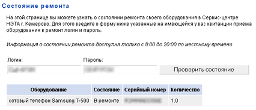

Пришлось давеча отдать в ремонт сотовый телефон. Телефон Samsung, сервисный центр Нэта.
В обмен на телефон была выдана квитанция, которая помимо всего прочего содержала еще и адрес страницы в интернете где процесс ремонта можно было бы контролировать. Ну думаю современные технологии добрались и до нашего городка. Хотя уверенности особой не было. Ожидания в общем-то были оправданы.

Система ясно сообщает, что сейчас происходит с телефоном.